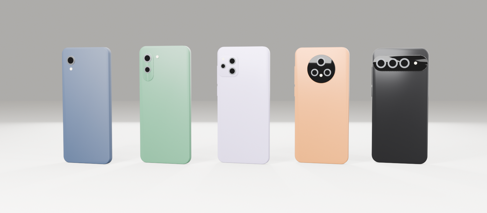
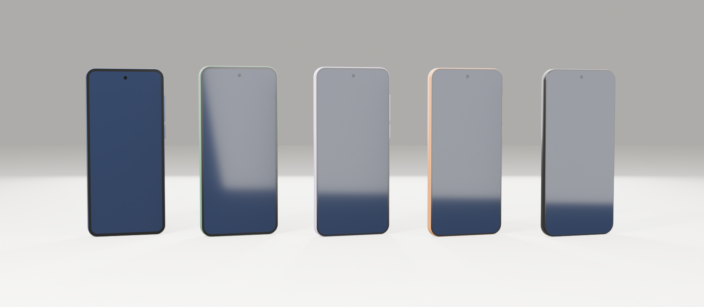

Visitors walk a character through a virtual Kampala phone shop, pick up any phone to spin and zoom it, choose storage and colour, and check out. This page explains how the product works and how we build it, from Blender to the browser.

blender/phones.py. They are brand-neutral, about 20 KB each after compression.The original brief (VIRTU.pdf) used sneakers. We start with smartphones because they are the best-selling consumer product in Uganda, and because their simple hard-surface shapes let us build our own licence-free 3D models in minutes. Sneakers come later as a second aisle on the same code.
| PDF (sneakers) | This build (phones) |
|---|---|
| Shoe size | Storage tier; each one changes the price |
| Colour | Colourway; we recolour the GLB material named Body at runtime, so no extra downloads |
| Shelves | Display tables, a hero podium, wall bays, counter |
| Simulated checkout | Mock MTN MoMo / Airtel Money / cash-on-delivery + Kampala delivery form |
| Mobile joystick "later" | Built in Phase 2; most of the audience is on Android phones |
Next.js serves the page. The 3D world runs in a client-only React Three Fiber <Canvas>. Normal HTML/Tailwind UI floats on top. Both read and write one small Zustand store, so the 3D scene and the UI never talk to each other directly.
Rendering, physics, character movement, proximity sensors. It writes only "what is near me" and "what am I inspecting" to the store.
Panels, cart, checkout are plain React + Tailwind. They are accessible, fast, and easy to restyle without touching 3D code.
Zustand works inside and outside the Canvas without re-rendering the whole scene. The cart persists across reloads.
We never call new THREE.WebGLRenderer() ourselves. React Three Fiber (R3F) is a React renderer for Three.js: every <mesh> in JSX becomes a THREE.Mesh, and the render loop, resizing and pointer events are handled for us. Drei adds ready-made helpers, and Rapier adds physics compiled to WebAssembly.
WebGL only exists in the browser. The 3D entry component starts with "use client" and is loaded with next/dynamic and ssr:false from a small client wrapper (Next 16 rejects ssr:false in Server Components), so Next.js server-renders the landing page and the loader, but never the Canvas.
useGLTFDrei's useGLTF fetches and caches a GLB and decodes meshopt/Draco compression automatically. Components suspend while loading, and useProgress drives the loading bar.
Each phone GLB has a material literally named Body. We clone the scene per display and set material.color from the selected colourway. Five colours cost zero extra downloads.
One binary file holds geometry, materials, textures and animations. It is the web-native 3D format, streams well from a CDN, and Blender exports it directly.
// src/components/3d/ExperienceLoader.tsx: ssr:false must live in a CLIENT component (Next 16) "use client"; import dynamic from "next/dynamic"; const Experience = dynamic(() => import("./Experience"), { ssr: false }); export default function ExperienceLoader() { return <Experience />; } // src/app/store/page.tsx: server component, tiny export default function StorePage() { return <ExperienceLoader />; } // src/components/3d/Experience.tsx "use client"; export default function Experience() { const [dpr, setDpr] = useState(1.5); return ( <Canvas dpr={dpr} camera={{ fov: 50 }}> <PerformanceMonitor onDecline={() => setDpr(1)} /> <Environment files="/hdri/showroom_1k.hdr" /> <Suspense fallback={null}> <Physics> <StoreScene /> <Player /> </Physics> </Suspense> </Canvas> ); } // src/components/3d/PhoneModel.tsx: recolour the "Body" material export function PhoneModel({ url, colour }: { url: string; colour: string }) { const { scene } = useGLTF(url); const clone = useMemo(() => scene.clone(true), [scene]); useLayoutEffect(() => { clone.traverse((o) => { if (o instanceof THREE.Mesh) { const mats = Array.isArray(o.material) ? o.material : [o.material]; mats.forEach((m, i) => { if (m.name === "Body") { const mine = m.clone(); mine.color.set(colour); Array.isArray(o.material) ? (o.material[i] = mine) : (o.material = mine); } }); } }); }, [clone, colour]); return <primitive object={clone} />; }
Versions were checked on npm on 4 Nov 2026. All peer dependencies line up on React 19, so no pinning is needed. ecctrl 2 also expects leva (a debug panel), so we install it too.
# 1. Next.js app (TypeScript, Tailwind, App Router, src/) npx create-next-app@latest . --ts --tailwind --app --src-dir --eslint --import-alias "@/*" # 2. 3D + physics + state npm i three @react-three/fiber @react-three/drei @react-three/rapier ecctrl leva zustand lucide-react npm i -D @types/three # 3. Asset tooling (run on demand, no install) npx @gltf-transform/cli optimize in.glb out.glb --compress meshopt --palette false --simplify false
| Package | Version | Role |
|---|---|---|
| next / react | 16.4 / 19.3 | Framework, routing, server rendering of non-3D pages |
| three | 0.187 | WebGL engine |
| @react-three/fiber | 9.8 | React renderer for Three.js |
| @react-three/drei | 10.7 | useGLTF, Environment, KeyboardControls, OrbitControls, Html, PerformanceMonitor, ContactShadows |
| @react-three/rapier | 2.2 | Physics: colliders, sensors, rigid bodies |
| ecctrl | 2.0 | Ready-made floating-capsule character controller with animation + joystick support |
| zustand | 5.0 | Cart + UI state |
ecctrl gives us a physics capsule that floats slightly above the floor (so it glides over small steps), reads keyboard or joystick input, and drives a follow camera. We put a rigged character GLB inside it and map its clips to the expected names.
drei KeyboardControls maps WASD/arrows, Shift to run, E to interact. On touch devices an on-screen joystick and an "Inspect" button replace them.
Walls, tables and the counter are fixed Rapier RigidBodys with cuboid colliders. The capsule cannot pass through them, and the camera is pulled in when a wall gets between it and the player.
A CC0 Quaternius character with clips renamed to ecctrl's set (idle, walk, run, jump…). ecctrl cross-fades them based on speed.
The inspect view is a separate, small Canvas inside the product panel, not the main camera flying over. It is simpler to build, works the same on mobile, and lets us use drei's <Stage> for studio lighting. The phone's Screen material has 0–1 UVs, so we map our own wallpaper art onto it and it lights up when inspected.
Line items are keyed by product + colour + storage. You can change storage or quantity in the drawer and remove items. Subtotal, a flat Kampala delivery fee and the total are formatted as UGX 1,499,000.
Name, phone, delivery area (Kampala divisions), and a payment choice: MTN MoMo, Airtel Money, or cash on delivery. "Pay" shows a mock "approve on your phone" step, then an order number and a boda ETA. A visible banner says no money is taken.
| Model | Tier | Camera design | Triangles | Optimised size |
|---|---|---|---|---|
| Nova A1 | Budget | Single lens, no island | 1,350 | 14 KB |
| Nova A5 | Entry | Vertical pill, dual | 2,362 | 19 KB |
| Pulse X | Mid-range | Square island, triple | 2,546 | 20 KB |
| Pulse X Pro | Upper mid | Large circular island | 2,994 | 22 KB |
| Zenith Ultra | Flagship | Full-width camera bar | 2,674 | 21 KB |

Screen material, ready for our own wallpaper art.Full details, including MCP setup, conventions and licences, are in ASSET-PIPELINE.md and ASSETS-CREDITS.md.
4G covers mainly the towns and 3G is still common. Most visitors will come from TikTok on a phone. So the budget is set from day one, not left to the end.
Total first 3D download. All 5 phones together are currently ~115 KB.
On a mid-range Android; 60 on desktop. DPR is capped at 1.5 and drops to 1 automatically.
1K HDRI + one light + ContactShadows. No real-time shadow maps on mobile.
The store shell loads first; phones stream in; useGLTF.preload warms the next ones.
3D-Shope/ ├── blender/phones.py # procedural phones + fixtures (exists) ├── docs/ # this page, BUILD-PLAN, RESEARCH, pipeline, credits ├── public/models/ │ ├── phones/*.glb # 5 phones (exists) │ ├── fixtures/*.glb # podium, display table (exists) │ ├── characters/ # Quaternius CC0 character │ └── environment/ # Kenney props, plants └── src/ ├── app/{page, store/page, checkout/page}.tsx ├── components/3d/{Experience, StoreScene, Player, PhoneDisplay, PhoneModel, InspectViewer}.tsx ├── components/{ui, products, cart}/ ├── store/{cart-store, ui-store}.ts ├── data/products.ts └── types/product.ts
create-next-app, install the stack, git + Vercel preview deploys.
Canvas, HDRI lighting, showroom room, fixtures from Blender, colliders, loader, PerformanceMonitor.
ecctrl player, animations, follow camera, collisions, on-screen joystick.
Catalogue data, phone displays, proximity prompt, inspect viewer, colour + storage selection.
Persistent cart, drawer, mock MoMo / Airtel Money checkout and delivery request.
Budget checks on real Android, Vercel production, OG image, TikTok + LinkedIn recordings.
Task-level checklists with "done when" criteria are in BUILD-PLAN.md. Market and version research with sources is in RESEARCH.md.